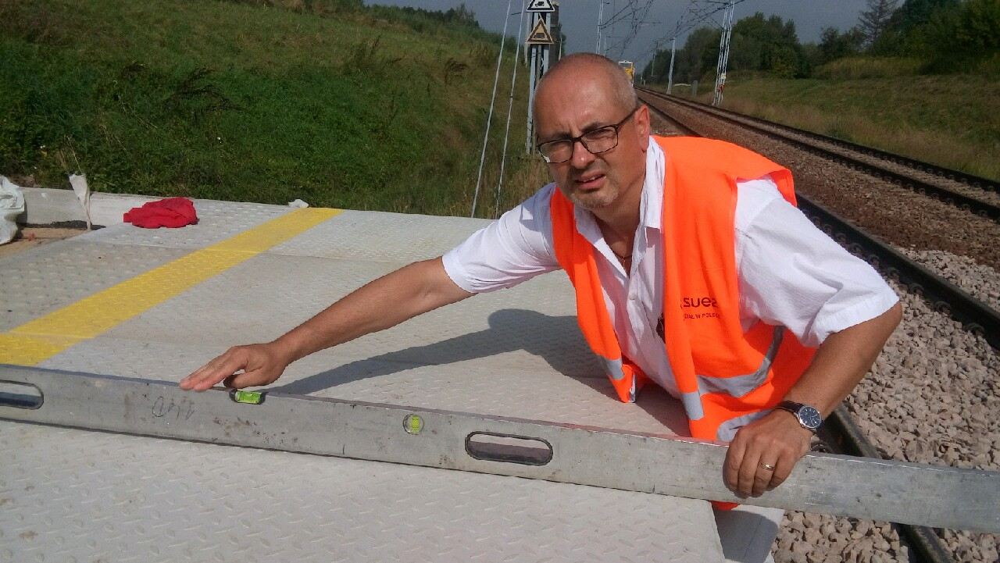

Jacek Kiczek
Kandydat do Rady Miasta Rzeszowa z okręgu nr 3 (Śródmieście) z listy Konfederacji
PostulatyPrzebudowa dworca
Przebudowa oraz modernizacja stacji kolejowej w Rzeszowie.

Budowa przystanku
Budowa przystanku kolejowego Rzeszów - Baranówka.

Wystąpienie
Wystąpienie na temat problemów komunikacyjnych miasta Rzeszowa.